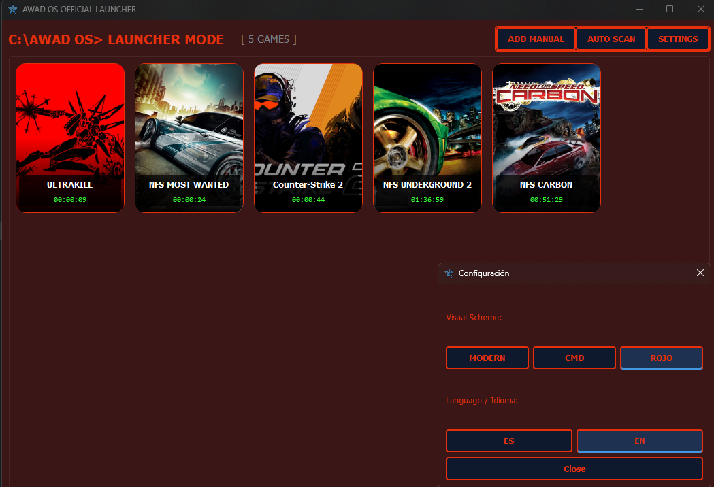
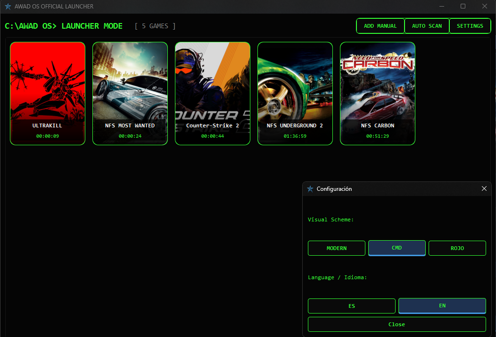
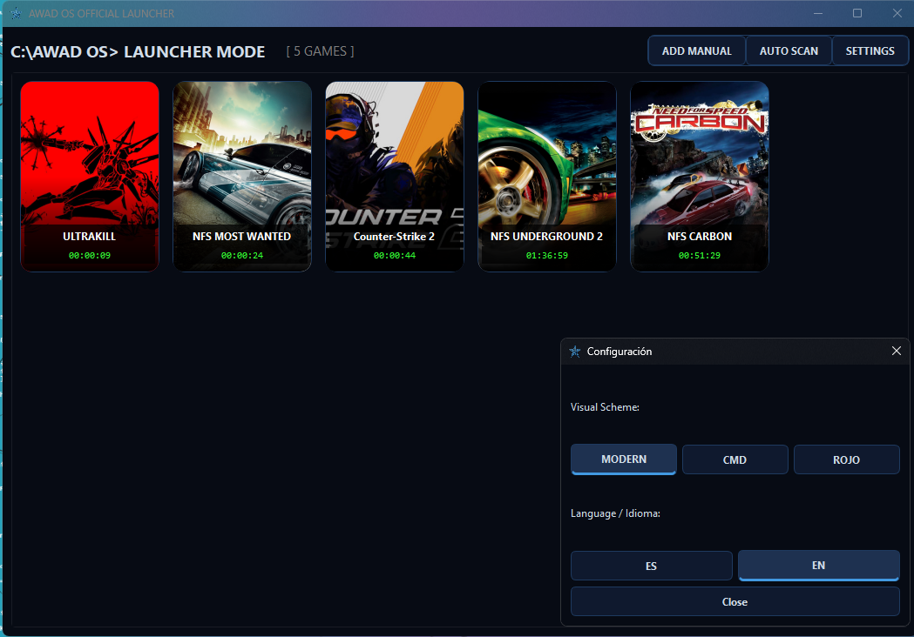

LAUNCHER "AWAD OS OFFICIAL LAUNCHER"
un launcher optimizado perfecto para cada compilar tus juegos de multiples plataformas
¿Qué hace exactamente este Launcher?
Este tipo de software actúa como una "capa" sobre tus tiendas digitales. En lugar de tener que abrir Steam, luego Epic Games y luego GOG, el launcher escanea tu PC y los reúne todos en una sola interfaz.
Contador de tiempo abierto por juego
Cómo funciona: El software registra el momento en que se ejecuta el archivo .exe del juego y deja de contar cuando dicho proceso se cierra. Utilidad: Te permite llevar un control exacto de cuántas horas le has dedicado a cada título, independientemente de la plataforma donde lo hayas comprado. Es ideal para jugadores que quieren hacer seguimiento de su progreso o simplemente por curiosidad estadística.
2. Buscador de juegos de Epic, Steam y GOG automático
Cómo funciona: El launcher utiliza las APIs (interfaces de programación) o escanea las rutas de instalación predeterminadas de estas tres plataformas en tu disco duro para detectar qué juegos tienes instalados. Utilidad: Te ahorra el trabajo manual de tener que buscar dónde está instalado cada juego. Con un solo clic, el programa "importa" tu biblioteca, ahorrándote tiempo y evitando errores de ruta.
3. Agregar juegos de manera manual
Cómo funciona: Si tienes juegos que no pertenecen a Steam, Epic o GOG (como un juego descargado de una web independiente, una versión antigua guardada en una carpeta, o un ejecutable (.exe) propio), esta función te permite buscar el archivo ejecutable en tu PC y añadirlo a la lista. Utilidad: Garantiza que tu biblioteca esté completa y que puedas lanzar cualquier programa o juego desde el mismo sitio, sin importar su origen.
Estilos personalizados
Cómo funciona: Se refiere a la capacidad de cambiar la apariencia visual de la interfaz (temas, colores, fondos de pantalla o skins). Utilidad: Personalización estética. Permite que el launcher combine con los colores de tu escritorio, el modo oscuro/claro de Windows, o simplemente darle un toque único a tu "centro de mando".
5. Traducción al inglés
Cómo funciona: Cambia la interfaz de usuario (menús, botones y textos) al idioma inglés. Utilidad: Amplía la accesibilidad del programa para usuarios que prefieren este idioma o que lo utilizan como lengua estándar, facilitando la navegación por los ajustes y opciones avanzadas.



Instalación por Gofile: Descargar aquí | Historial de versiones: Ver Devlog